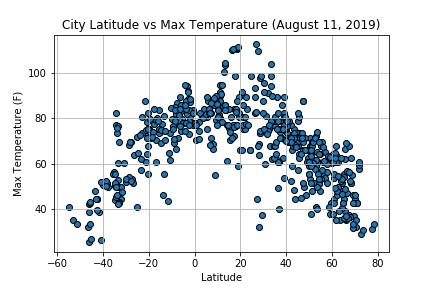
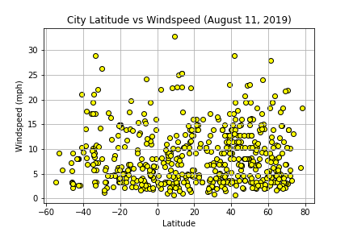

Max Temperature

As expected the weather becomes significantly warmer as one approaches the equator (0 degree Latitude). More interestingly,
however, is the fact that the sourthern hemisphere tends to be warmer this time of the year than northen hemisphere. This may
be due to the tilt of the earth at the time of the year this data was gathered.
